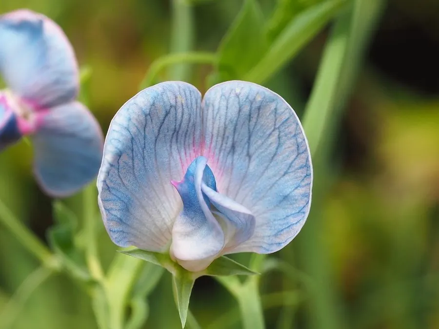

农作物与经济植物 · 植物界
山黧豆 Lathyrus sativus

豆科山黧豆属一年生草本，耐旱耐瘠、籽粒蛋白含量高，但含神经毒素 ODAP，长期大量食用可致山黧豆中毒。
- 分类
- 门被子植物门纲木兰纲目豆目科豆科属山黧豆属
- 栖息环境
- 温带干旱与半干旱地区，耐旱、耐瘠薄、抗逆性强
- 地理分布
- 原产地中海与西亚；中国西北、华北有栽培，南亚、非洲也有种植
- 保护级别
- IUCN 暂无评估；栽培较广，地方品种资源需保护
物种志
山黧豆为一年生草本，高 30–100 厘米，茎直立或蔓生，具翅状棱。叶为羽状复叶，小叶 1–2 对，线状披针形，叶轴末端具卷须。花单生叶腋，白色、蓝色或紫红色；荚果扁长圆形，长 3–5 厘米，内含 2–4 粒种子，种子楔形，灰白色至褐色。
山黧豆原产地中海与西亚，在中国西北、华北有栽培，耐旱、耐瘠薄、抗逆性强，是干旱地区重要的救荒作物。它的籽粒蛋白质含量高，但含有神经毒素 β-N-草酰氨基丙氨酸（ODAP），长期大量单一食用会导致山黧豆中毒（下肢痉挛性瘫痪）。因此食用前需充分浸泡、煮熟，并控制摄入量，不可长期以它为主食。山黧豆也可作饲料与绿肥。
形态与习性
- 株高30–100 厘米，茎具翅状棱
- 花期5–7 月，花白、蓝或紫红色
- 果期7–9 月，荚果扁长圆形
- 光照喜光，长日照作物
- 水分耐旱，忌积水
- 毒性含神经毒素 ODAP，长期大量食用可致瘫痪
- 主要用途救荒粮食、饲料与绿肥，食用须浸泡煮熟并限量
趣味知识
- 山黧豆含有神经毒素 ODAP，长期大量食用会引起下肢痉挛性瘫痪，即“山黧豆中毒”。
- 它耐旱耐瘠、抗逆性极强，在饥荒年份常被当作救命作物。
- 食用山黧豆前需充分浸泡、换水并彻底煮熟，以降低毒素含量。
- 即使经过处理，也不宜长期以山黧豆为主食，应与其他谷物搭配。